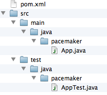
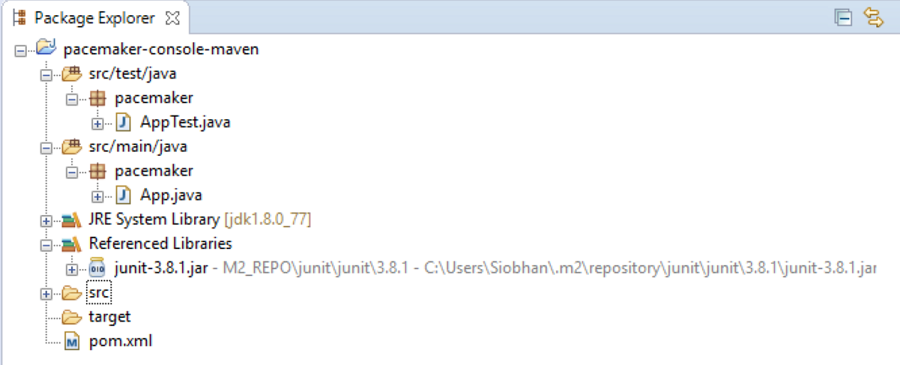
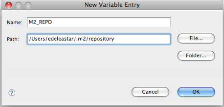
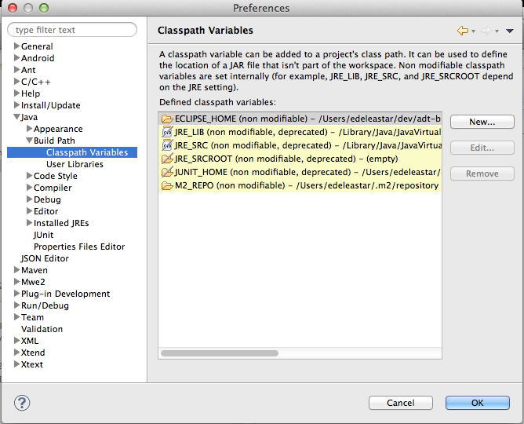
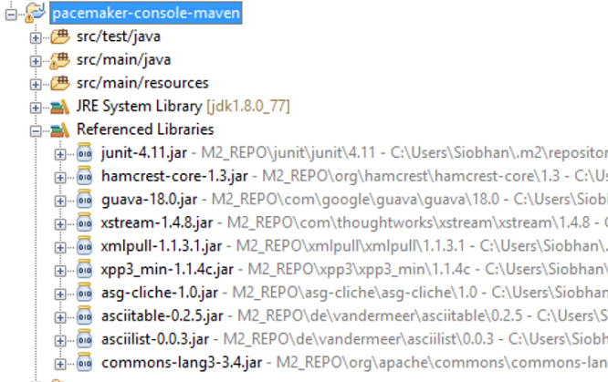
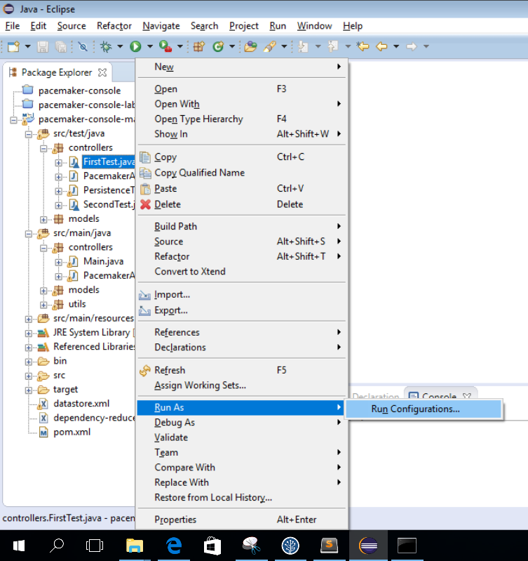
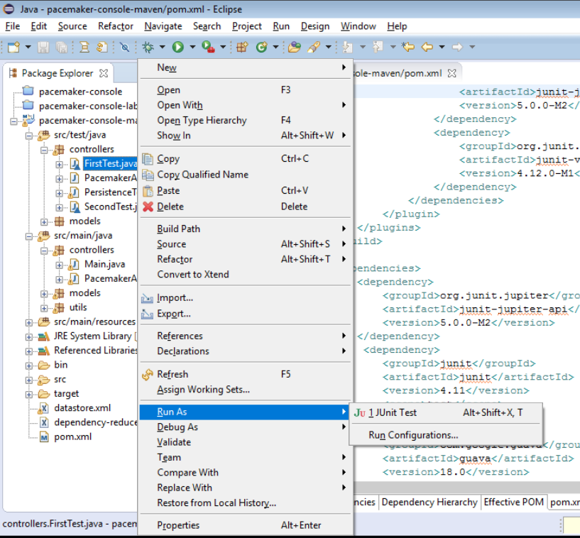

Objectives
Install and configure maven and then create and and test a single module maven project with several external dependencies. Once this is working, incorporate into Eclipse.
Install Maven
Visit the main Maven site:
and review some of the general introductions.
Download the project archive (note: download the binary and not the source):
Follow these installations instructions:
If you are working on one of the desktops in the MSc lab (D05), you may need an additional step to circumvent the firewall rules. Read this FAQ entry here:
Finally, to verify a successful installation, follow this 5 minute guide
An important aspect of the installation is which version of the JDK it uses. There is a significant difference between the class file formats from 1.6 to 1.7. For the code + libraries in this lab to build successfully, you should have java 1.8 installed.
Maven should use minimum 1.8 too. You can check this my entering 'mvn -version' on the console. You should see something like this:
C:\Users\Siobhan>mvn -version
Apache Maven 3.3.9 (bb52d8502b132ec0a5a3f4c09453c07478323dc5; 2015-11-10T16:41:47+00:00)
Maven home: C:\dev\apache-maven-3.3.9\bin\..
Java version: 1.8.0_73, vendor: Oracle Corporation
Java home: C:\Program Files\Java\jdk1.8.0_73\jre
Default locale: en_IE, platform encoding: Cp1252
OS name: "windows 10", version: "10.0", arch: "amd64", family: "dos"
C:\Users\Siobhan>Create Project
Review pacemaker project
You should have the pacemaker project from lab04 in your workspace:

If you don't have a lab04 pacemaker project, you can download it from here:
Create Maven Project
Navigate to a suitable folder (i.e. a new workspace that you will use for maven projects) and enter the following command:
mvn archetype:generate -DarchetypeGroupId=org.apache.maven.archetypes -DarchetypeArtifactId=maven-archetype-quickstart -DgroupId=pacemaker -DartifactId=pacemaker-console-mavenThis may take some time, maven will download quite a few artifacts into it own repository. If you are asked to enter versions for certain items, just hit the enter key. Eventually it should complete successfully.
The command will have created the following project structure:

The key file to inspect is the generated pom.xml:
<project xmlns="http://maven.apache.org/POM/4.0.0" xmlns:xsi="http://www.w3.org/2001/XMLSchema-instance"
xsi:schemaLocation="http://maven.apache.org/POM/4.0.0 http://maven.apache.org/xsd/maven-4.0.0.xsd">
<modelVersion>4.0.0</modelVersion>
<groupId>pacemaker</groupId>
<artifactId>pacemaker-console-maven</artifactId>
<version>1.0-SNAPSHOT</version>
<packaging>jar</packaging>
<name>pacemaker-console-maven</name>
<url>http://maven.apache.org</url>
<properties>
<project.build.sourceEncoding>UTF-8</project.build.sourceEncoding>
</properties>
<dependencies>
<dependency>
<groupId>junit</groupId>
<artifactId>junit</artifactId>
<version>3.8.1</version>
<scope>test</scope>
</dependency>
</dependencies>
</project>Generate an Eclipse Project
On the command line, change into the pacemaker-console-maven folder and enter the following command:
mvn eclipse:eclipseThis will generate an eclipse project from the pom.
In eclipse, import this project (as an existing project). It should show up on your workspace like this:

Copy paste sources into new project
Within eclipse, you should be able to copy/paste all of the sources into the appropriate folder in the new project. Also, delete the maven generated pacemaker packages:

There are a significant number of errors however, which we will fix in the next step.
Incorporate Correct Library References
Inspect the pacemaker-console-maven folder, open and review the "pom.xml" file.
<project xmlns="http://maven.apache.org/POM/4.0.0" xmlns:xsi="http://www.w3.org/2001/XMLSchema-instance"
xsi:schemaLocation="http://maven.apache.org/POM/4.0.0 http://maven.apache.org/xsd/maven-4.0.0.xsd">
<modelVersion>4.0.0</modelVersion>
<groupId>pacemaker</groupId>
<artifactId>pacemaker-console-maven</artifactId>
<version>1.0-SNAPSHOT</version>
<packaging>jar</packaging>
<name>pacemaker-console-maven</name>
<url>http://maven.apache.org</url>
<properties>
<project.build.sourceEncoding>UTF-8</project.build.sourceEncoding>
</properties>
<dependencies>
<dependency>
<groupId>junit</groupId>
<artifactId>junit</artifactId>
<version>3.8.1</version>
<scope>test</scope>
</dependency>
</dependencies>
</project>Modify the "url" and "version" elements to be more consistent with our project:
<version>1.0</version>
<url>www.wit.ie</url>A note on Version VS SNAPSHOT:
- Version: if Maven once downloaded the mentioned version, say 1.0, it will never try to download a newer 1.0 available in repository. To download the updated code, the version is be upgraded to 1.1.
- SNAPSHOT, Maven will automatically fetch the latest SNAPSHOT (e.g. 1.0-SNAPSHOT) everytime the team builds their project.
We are using Java 8 for our application and associated libraries. We can specifically enable this version by extending the
<properties>
<project.build.sourceEncoding>UTF-8</project.build.sourceEncoding>
<maven.compiler.source>1.8</maven.compiler.source>
<maven.compiler.target>1.8</maven.compiler.target>
</properties>The junit version in the generated POM is incorrect (3.8.1), acquire and configure the 4.11 version:
<dependency>
<groupId>junit</groupId>
<artifactId>junit</artifactId>
<version>4.11</version>
<scope>test</scope>
</dependency>We are using a range of libraries, which we must incorporated into the pom. Guava and Xstream are well known, and already in the standard maven repositories. We just insert the correct references:
<dependency>
<groupId>com.google.guava</groupId>
<artifactId>guava</artifactId>
<version>18.0</version>
</dependency>
<dependency>
<groupId>com.thoughtworks.xstream</groupId>
<artifactId>xstream</artifactId>
<version>1.4.8</version>
</dependency>However, Cliche is older and us not in a common repository. We must still include it however. We will deal with it in the next step.
<dependency>
<groupId>asg-cliche</groupId>
<artifactId>asg-cliche</artifactId>
<version>1.0</version>
</dependency>Complete POM
The full version of the POM should look like this:
<project xmlns="http://maven.apache.org/POM/4.0.0" xmlns:xsi="http://www.w3.org/2001/XMLSchema-instance"
xsi:schemaLocation="http://maven.apache.org/POM/4.0.0 http://maven.apache.org/xsd/maven-4.0.0.xsd">
<modelVersion>4.0.0</modelVersion>
<groupId>pacemaker</groupId>
<artifactId>pacemaker-console-maven</artifactId>
<version>1.0</version>
<packaging>jar</packaging>
<name>pacemaker-console-maven</name>
<url>http://www.wit.ie</url>
<properties>
<project.build.sourceEncoding>UTF-8</project.build.sourceEncoding>
<maven.compiler.source>1.8</maven.compiler.source>
<maven.compiler.target>1.8</maven.compiler.target>
</properties>
<dependencies>
<dependency>
<groupId>junit</groupId>
<artifactId>junit</artifactId>
<version>4.11</version>
<scope>test</scope>
</dependency>
<dependency>
<groupId>com.google.guava</groupId>
<artifactId>guava</artifactId>
<version>18.0</version>
</dependency>
<dependency>
<groupId>com.thoughtworks.xstream</groupId>
<artifactId>xstream</artifactId>
<version>1.4.8</version>
</dependency>
<dependency>
<groupId>asg-cliche</groupId>
<artifactId>asg-cliche</artifactId>
<version>1.0</version>
</dependency>
</dependencies>
</project>To ensure that the maven file is correct, return to your command prompt and enter the following command:
mvn validateThis will pick up any errors in the POM, although it will not check availability of the dependencies.
C:\Users\Siobhan\Dropbox\2016-2017\agile\workspace_maven\pacemaker-console-maven>mvn validate
[INFO] Scanning for projects...
[INFO]
[INFO] ------------------------------------------------------------------------
[INFO] Building pacemaker-console-maven 1.0
[INFO] ------------------------------------------------------------------------
[INFO] ------------------------------------------------------------------------
[INFO] BUILD SUCCESS
[INFO] ------------------------------------------------------------------------
[INFO] Total time: 0.100 s
[INFO] Finished at: 2016-10-13T13:39:41+01:00
[INFO] Final Memory: 5M/123M
[INFO] ------------------------------------------------------------------------
C:\Users\Siobhan\Dropbox\2016-2017\agile\workspace_maven\pacemaker-console-maven>Note: If you have used any other components in lab04 e.g. ASCIITable, you will need to include this as a dependency in your pom.xml e.g.:
<!-- https://mvnrepository.com/artifact/de.vandermeer/asciitable -->
<dependency>
<groupId>de.vandermeer</groupId>
<artifactId>asciitable</artifactId>
<version>0.2.5</version>
</dependency>Build
Attempting to compile and test
In your command prompt/shell, type in mvn test. It will fail because maven cannot resolve the asg-cliche dependency:
C:\Users\Siobhan\Dropbox\2016-2017\agile\workspace_maven\pacemaker-console-maven>mvn test
[INFO] Scanning for projects...
[INFO]
[INFO] ------------------------------------------------------------------------
[INFO] Building pacemaker-console-maven 1.0
[INFO] ------------------------------------------------------------------------
[WARNING] The POM for asg-cliche:asg-cliche:jar:1.0 is missing, no dependency information available
[INFO] ------------------------------------------------------------------------
[INFO] BUILD FAILURE
[INFO] ------------------------------------------------------------------------
[INFO] Total time: 0.337 s
[INFO] Finished at: 2016-10-13T13:40:45+01:00
[INFO] Final Memory: 6M/123M
[INFO] ------------------------------------------------------------------------
[ERROR] Failed to execute goal on project pacemaker-console-maven: Could not resolve dependencies for project pacemaker:pacemaker-console-maven:jar:1.0: Failure to find asg-cliche:asg-cliche:jar:1.0 in https://repo.maven.apache.org/maven2 was cached in the local repository, resolution will not be reattempted until the update interval of central has elapsed or updates are forced -> [Help 1]
[ERROR]
[ERROR] To see the full stack trace of the errors, re-run Maven with the -e switch.
[ERROR] Re-run Maven using the -X switch to enable full debug logging.
[ERROR]
[ERROR] For more information about the errors and possible solutions, please read the following articles:
[ERROR] [Help 1] http://cwiki.apache.org/confluence/display/MAVEN/DependencyResolutionException
C:\Users\Siobhan\Dropbox\2016-2017\agile\workspace_maven\pacemaker-console-maven>Resolving asg-cliche
The asg-cliche library is not in any public repository, so we must install it ourselves in our local repo.
Locate the jar from a previous project, and rename it for simplicity to be asg-cliche-1.0.jar. Create a, say, resources folder in your ..\pacemaker-console-maven\src\main\ directory and place your jar file in here.
In your command prompt/shell, navigate to this folder and enter the following command:
mvn install:install-file -Dfile=asg-cliche-1.0.jar -DgroupId=asg-cliche -DartifactId=asg-cliche -Dversion=1.0 -Dpackaging=jarThis will install the jar file in the local .m2 repository. In windows, this repo is located in a similar directory structure to this: C:\Users\Siobhan.m2\
C:\Users\Siobhan\Dropbox\2016-2017\agile\workspace_maven\pacemaker-console-maven\src\main\resources>mvn install:install-file -Dfile=asg-cliche-1.0.jar -DgroupId=asg-cliche -DartifactId=asg-cliche -Dversion=1.0 -Dpackaging=jar
[INFO] Scanning for projects...
[INFO]
[INFO] ------------------------------------------------------------------------
[INFO] Building Maven Stub Project (No POM) 1
[INFO] ------------------------------------------------------------------------
[INFO]
[INFO] --- maven-install-plugin:2.4:install-file (default-cli) @ standalone-pom ---
[INFO] Installing C:\Users\Siobhan\Dropbox\2016-2017\agile\workspace_maven\pacemaker-console-maven\src\main\resources\asg-cliche-1.0.jar to C:\Users\Siobhan\.m2\repository\asg-cliche\asg-cliche\1.0\asg-cliche-1.0.jar
[INFO] Installing C:\Users\Siobhan\AppData\Local\Temp\mvninstall9125095421859336544.pom to C:\Users\Siobhan\.m2\repository\asg-cliche\asg-cliche\1.0\asg-cliche-1.0.pom
[INFO] ------------------------------------------------------------------------
[INFO] BUILD SUCCESS
[INFO] ------------------------------------------------------------------------
[INFO] Total time: 0.712 s
[INFO] Finished at: 2016-10-13T13:45:52+01:00
[INFO] Final Memory: 7M/123M
[INFO] ------------------------------------------------------------------------
C:\Users\Siobhan\Dropbox\2016-2017\agile\workspace_maven\pacemaker-console-maven\src\main\resources>Build Goal
In your command prompt/shell, return to your "pacemaker-console-maven" project folder where your pom.xml is stored. Type the following:
mvn testA broad range of downloads will be generated by this command, including updates to maven itself and the referenced libraries. If successful, the build process will eventually report successful test execution.
Locate and inspect the generated "target" folder in the pacemaker-console-maven project.
Return back to the root directory of the project and regenerate the eclipse project to eliminate the errors:
mvn eclipse:eclipseBefore refreshing the project in eclipse, you need to make sure that the 'M2_REPO' classpath variable is 'bound' to your local .m2 folder. These variables are available in 'Window->Preferences->Java->Build Path->Classpath Variables'
Creating a variable will enable you to enter something like this:

If configured successfully, it may look like this:

When refreshed, the project should be fully resolved in eclipse:

Refresh the project in Eclipse, and the errors should be gone. You should be able to run the project and also run the test from within eclipse.
Package Goal
Try the following command:
mvn packageThis should generate a pacemaker-console-maven-1.0.jar file in the target folder
Try to work out the command line necessary to execute the application within your command prompt/shell.
The command is:
mvn exec:java -Dexec.mainClass="controllers.Main"Explore Repositories
Local Repository
Locate the local maven repository - it should be in your home folder/.m2/repository. It contains not just dependencies explicitly downloaded as part of the project you have just constructed, but also components downloaded by maven as part of the goals you have invoked. This may include components used by maven itself.
If you examine the repository, and recall the naming system we adopted for the cliche component, then you can locate the generated jar file.
Install Goal
We can install the component we just generated into the local maven repository. To do this, navigate to the folder containing your pom.xml and type:
mvn installIn the output from the install command, you can see the directory structure associated with the install of your pacemaker jar file.
[INFO] Installing C:\Users\Siobhan\Dropbox\2016-2017\agile\workspace_maven\pacemaker-console-maven\target\pacemaker-console-maven-1.0.jar to C:\Users\Siobhan\.m2\repository\pacemaker\pacemaker-console-maven\1.0\pacemaker-console-maven-1.0.jar
[INFO] Installing C:\Users\Siobhan\Dropbox\2016-2017\agile\workspace_maven\pacemaker-console-maven\pom.xml to C:\Users\Siobhan\.m2\repository\pacemaker\pacemaker-console-maven\1.0\pacemaker-console-maven-1.0.pom
[INFO] ------------------------------------------------------------------------
[INFO] BUILD SUCCESS
[INFO] ------------------------------------------------------------------------
[INFO] Total time: 2.781 s
[INFO] Finished at: 2016-10-13T16:39:44+01:00
[INFO] Final Memory: 11M/155M
[INFO] ------------------------------------------------------------------------
C:\Users\Siobhan\Dropbox\2016-2017\agile\workspace_maven\pacemaker-console-maven>Unix Launch Script
Executing the component from the command line requires a review of the locations of the generated jar file, and the associated libraries. The previous step will have centralized all of these into the maven 2 repository HOME/.m2/repository. The simplest mechanism for launching the application will be to compose a shell script.
On Unix/Linux/OS X, the script can be structured as follows:
M2_REPO=/Users/edeleastar/.m2/repository
export CLASSPATH=%CLASSPATH%:\
${M2_REPO}/pacemaker/pacemaker-console-maven/1.0/pacemaker-console-maven-1.0.jar:\
${M2_REPO}/com/thoughtworks/xstream/xstream/1.4.8/xstream-1.4.8.jar:\
${M2_REPO}/com/google/guava/guava/18.0/guava.18.0.jar:\
${M2_REPO}/asg-cliche/asg-cliche/1.0/asg-cliche-1.0.jar
java controllers.MainThe first two entries establish environment variables to abbreviate the location of the maven repository, and the Pim jar just installed into it. The 'export CLASSPATH...' entry sets up the classpath to include the pim jar file, and also the required libraries (also located in the repository). The final entry is the launch command itself, which invokes the main method in the appropriate class.
Windows Launch Script
The following batch file contains the launch script to construct the classpath appropriately. The Windows version of the launch script has a similar structure, but different syntax:
echo off
set M2_REPO=C:/Users/Siobhan/.m2/repository
set CLASSPATH=.;%CLASSPATH%;%M2_REPO%/pacemaker/pacemaker-console-maven/1.0/pacemaker-console-maven-1.0.jar;%M2_REPO%/com/thoughtworks/xstream/xstream/1.4.8/xstream-1.4.8.jar;%M2_REPO%/com/google/guava/guava/18.0/guava.18.0.jar;%M2_REPO%/asg-cliche/asg-cliche/1.0/asg-cliche-1.0.jar;"
java controllers.MainThe script is very sensitive to cases, semicolons (instead of colons in the original) and the presence of whitespace. Also, note carefully the structure of the M2_REPO folder path in particular.
Launching the app from the command prompt
Based on your OS, run the desired script. You should expect to be using the pacemaker console user interface. If you are not seeing the pacemaker console and see this output instead, there is a pom.xml fix detailed below:
C:\Users\Siobhan\Dropbox\2016-2017\agile\workspace_maven\pacemaker-console-maven>java controllers.Main
Error: A JNI error has occurred, please check your installation and try again
Exception in thread "main" java.lang.NoClassDefFoundError: de/vandermeer/asciitable/v2/render/V2_Width
at java.lang.Class.getDeclaredMethods0(Native Method)
at java.lang.Class.privateGetDeclaredMethods(Unknown Source)
at java.lang.Class.privateGetMethodRecursive(Unknown Source)
at java.lang.Class.getMethod0(Unknown Source)
at java.lang.Class.getMethod(Unknown Source)
at sun.launcher.LauncherHelper.validateMainClass(Unknown Source)
at sun.launcher.LauncherHelper.checkAndLoadMain(Unknown Source)
Caused by: java.lang.ClassNotFoundException: de.vandermeer.asciitable.v2.render.V2_Width
at java.net.URLClassLoader.findClass(Unknown Source)
at java.lang.ClassLoader.loadClass(Unknown Source)
at sun.misc.Launcher$AppClassLoader.loadClass(Unknown Source)
at java.lang.ClassLoader.loadClass(Unknown Source)
... 7 moreTo get around this problem, add the following
<build>
<plugins>
<plugin>
<artifactId>maven-shade-plugin</artifactId>
<version>2.4.3</version>
<executions>
<execution>
<phase>package</phase>
<goals>
<goal>shade</goal>
</goals>
<configuration>
<transformers>
<transformer implementation="org.apache.maven.plugins.shade.resource.ManifestResourceTransformer">
<mainClass>controllers.Main</mainClass>
</transformer>
</transformers>
</configuration>
</execution>
</executions>
</plugin>
</plugins>
</build>Save your pom.xml and rerun the mvn install command.
Rerun the desired batch script from above and you should now see the pacemaker console running.
Exercises
The complete maven pim project so far:
Exercise 1
Install the following editor:
Note that by just dragging / dropping a folder into the editor window a 'project' view is presented, not unlike the package view in Eclipse. This includes syntax highlighting, but not of course refactoring or debugging.
Make a superficial change to the user interface of the pacemaker application - a different greeting for example. Just using maven - and the execution scripts we have covered in the last step, build, test and interactively execute the application
Exercise 2
Suppose you wanted to use the joda date time library
and say you are interested in its Duration data type:
When just using eclipse, you would have incorporate the relevant jar files into the project. With maven however, you will need to incorporate the appropriate references into the pom file.
This it the maven repository for joda time libraries:
.. and the latest version is:
Remember, the steps involved in bringing in a new library:
- incorporate the dependency into the pom
- do a build or test (via maven)
- regenerate the eclipse project using 'mvn eclipse:eclipse'
- refresh the project in eclipse
Try this now for joda time - perhaps introducing a Duration attribute into Activity.
Exercise 3: Maven Eclipse Plugin
This is a plugin for eclipse to support maven directly in the IDE:
Documented here:
Install the plugp-in using Eclipse->Help->Install new software.. and the link: http://download.eclipse.org/technology/m2e/releases
Convert the project we are currently working on to a Maven project using Configure -> Convert to Maven Project.
You now should have a Maven option on your context sensitive menu. Explore these options.
Exercise 4: Gradle
Gradle is seen as a potential successor to Maven - and is in fact built on the maven infrastructure.
Investigate the issues associate with moving from maven to Gradle. This page might be useful:
Maven and JUnit5
Currently there is no direct Junit5 support in Eclipse:
The JUnit team has developed a very basic provider for Maven Surefire that lets you run JUnit 4 and JUnit5 (Jupiter) tests via mvn test.
Briefly review the junit5-maven-consumer project:
We will now incorporate FirstTest.java and SecondTest.java into our pacemaker-console-maven project. Once we are satisfied that our JUnit5 tests are running correctly via maven, we can then update some of our existing JUnit4 tests to JUnit5.
Incorporating JUnit5 capabilities
Edit the pom.xml file in your pacemaker-console-maven project to include the following. Note that you may have the
...
<build>
<plugins>
...
<plugin>
<artifactId>maven-surefire-plugin</artifactId>
<version>2.19.1</version>
<configuration>
<includes>
<include>**/Test*.java</include>
<include>**/*Test.java</include>
<include>**/*Tests.java</include>
<include>**/*TestCase.java</include>
</includes>
</configuration>
<dependencies>
<dependency>
<groupId>org.junit.platform</groupId>
<artifactId>junit-platform-surefire-provider</artifactId>
<version>1.0.0-M2</version>
</dependency>
<dependency>
<groupId>org.junit.jupiter</groupId>
<artifactId>junit-jupiter-engine</artifactId>
<version>5.0.0-M2</version>
</dependency>
<dependency>
<groupId>org.junit.vintage</groupId>
<artifactId>junit-vintage-engine</artifactId>
<version>4.12.0-M1</version>
</dependency>
</dependencies>
</plugin>
</build>
...Now add the following dependency to your pom (in the same area where you have the JUnit 4.11 dependency):
<dependency>
<groupId>org.junit.jupiter</groupId>
<artifactId>junit-jupiter-api</artifactId>
<version>5.0.0-M2</version>
</dependency>Save pom.xml and run the command, mvn validate to ensure that your pom.xml is ok.
In the test/controllers package, we can test the JUnit5 dependency by creating this basic JUnit5 test class:
package controllers;
//source: https://github.com/junit-team/junit5-samples
import static org.junit.jupiter.api.Assertions.assertEquals;
import org.junit.jupiter.api.DisplayName;
import org.junit.jupiter.api.Test;
import org.junit.jupiter.api.TestInfo;
class FirstTest {
@Test
@DisplayName("My 1st JUnit 5 test!")
void myFirstTest(TestInfo testInfo) {
assertEquals(2, 1 + 1, "1 + 1 should equal 2");
assertEquals("My 1st JUnit 5 test!", testInfo.getDisplayName(), () -> "TestInfo is injected correctly");
}
}Run mvn test. The output should show that FirstTest JUnit5 tests ran successfully.
[INFO] --- maven-surefire-plugin:2.19.1:test (default-test) @ pacemaker-console-maven ---
-------------------------------------------------------
T E S T S
-------------------------------------------------------
Running controllers.FirstTest
Tests run: 1, Failures: 0, Errors: 0, Skipped: 0, Time elapsed: 0.08 sec - in controllers.FirstTest
Running controllers.PacemakerAPITest
Tests run: 7, Failures: 0, Errors: 0, Skipped: 0, Time elapsed: 0.048 sec - in controllers.PacemakerAPITest
Running controllers.PersistenceTest
Tests run: 2, Failures: 0, Errors: 0, Skipped: 0, Time elapsed: 0.366 sec - in controllers.PersistenceTest
Running models.ActivityTest
Tests run: 3, Failures: 0, Errors: 0, Skipped: 0, Time elapsed: 0.002 sec - in models.ActivityTest
Running models.LocationTest
Tests run: 3, Failures: 0, Errors: 0, Skipped: 0, Time elapsed: 0.004 sec - in models.LocationTest
Running models.UserTest
Tests run: 3, Failures: 0, Errors: 0, Skipped: 0, Time elapsed: 0.009 sec - in models.UserTest
Results :
Tests run: 19, Failures: 0, Errors: 0, Skipped: 0
[INFO] ------------------------------------------------------------------------
[INFO] BUILD SUCCESS
[INFO] ------------------------------------------------------------------------
[INFO] Total time: 6.623 s
[INFO] Finished at: 2016-10-14T16:38:41+01:00
[INFO] Final Memory: 11M/224M
[INFO] ------------------------------------------------------------------------
C:\Users\Siobhan\Dropbox\2016-2017\agile\workspace_maven\pacemaker-console-maven>Adding a second test class
Now that JUnit5 is recognised by your app, create another test class in the test/controllers package:
package controllers;
//source: https://github.com/junit-team/junit5-samples
import static org.junit.jupiter.api.Assertions.assertEquals;
import org.junit.jupiter.api.Disabled;
import org.junit.jupiter.api.Test;
class SecondTest {
@Test
@Disabled
void mySecondTest() {
assertEquals(2, 1, "2 is not equal to 1");
}
}Save it and re-run mvn test again. Your output should now show that you ran 20 tests with one skipped:
-------------------------------------------------------
T E S T S
-------------------------------------------------------
Running controllers.FirstTest
Tests run: 1, Failures: 0, Errors: 0, Skipped: 0, Time elapsed: 0.143 sec - in controllers.FirstTest
Running controllers.PacemakerAPITest
Tests run: 7, Failures: 0, Errors: 0, Skipped: 0, Time elapsed: 0.063 sec - in controllers.PacemakerAPITest
Running controllers.PersistenceTest
Tests run: 2, Failures: 0, Errors: 0, Skipped: 0, Time elapsed: 0.243 sec - in controllers.PersistenceTest
Running controllers.SecondTest
Tests run: 1, Failures: 0, Errors: 0, Skipped: 1, Time elapsed: 0.012 sec - in controllers.SecondTest
Running models.ActivityTest
Tests run: 3, Failures: 0, Errors: 0, Skipped: 0, Time elapsed: 0.002 sec - in models.ActivityTest
Running models.LocationTest
Tests run: 3, Failures: 0, Errors: 0, Skipped: 0, Time elapsed: 0.008 sec - in models.LocationTest
Running models.UserTest
Tests run: 3, Failures: 0, Errors: 0, Skipped: 0, Time elapsed: 0.003 sec - in models.UserTest
Results :
Tests run: 20, Failures: 0, Errors: 0, Skipped: 1Running JUnit5 inside Eclipse
Now that we have JUnit5 running through maven, we will now focus on running JUnit5 through Eclipse.
Right click on FirstTests.java and select the Run as option. You will notice that you don't have the option to run as a JUnit test:

We can fix this by adding the following dependency to pom.xml:
<dependency>
<groupId>org.junit.platform</groupId>
<artifactId>junit-platform-runner</artifactId>
<version>1.0.0-M2</version>
</dependency>Then add the following class level annotation (and associated imports) to the two JUnit5 test classes:
import org.junit.platform.runner.JUnitPlatform;
import org.junit.runner.RunWith;
@RunWith(JUnitPlatform.class)Run mvn compile and once the build is successful, you should be now see the JUnit run option:

Refactoring pacemaker tests
The purpose of the above steps was to incorporate JUnit5 capabilities into both the maven build of pacemaker-console-maven and the Eclipse IDE, whilst verifying that the JUnit5 tests were running correctly.
You are now in a position to refactor your pacemaker tests from JUnit4 to JUnit5, should you wish to do so. You can delete the FirstTest and SecondTest classes as they were only for verification purposes.